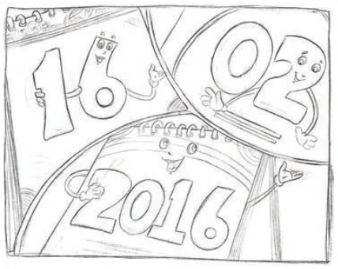

On the usual 12-hour clock, there are timings with different patterns. For example, 4:44, 10:10, 12:21. Try and find out all possible times on a 12-hour clock of each of these types. Manish has his birthday on 20/12/2012 where the digits ‘2’, ‘0’, ‘1’, and ‘2’ repeat in that order. Find some other dates of this form from the past. His sister, Meghana, has her birthday on 11/02/2011 where the digits read the same from left to right and from right to left. Find all possible dates of this form from the past. Jeevan was looking at this year’s calendar. He started wondering, "Why should we change the calendar every year? Can we not reuse a calendar?". What do you think? You might have noticed that last year’s calendar was different from this year’s. Also, next year’s calendar will also be different from the previous years. But, will any year’s calendar repeat again after some years? Will all dates and days in a year match exactly with that of another year?
